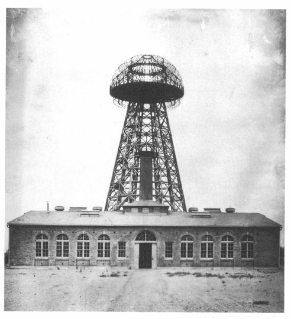

Tesla most experimented with wireless power transmission. In 1891 he presented the first wireless transmission on the principle of induction coil. In 1896 he managed to show the transfer of energy to a distance of 48 km (30 miles). He experimented mostly in his laboratory in Colorado Springs, but failed to complete his research because the investors could not see any profit in his project. Today's world is unthinkable without wireless technology, but it is used mainly for data transmission, and for the transmission of energy there is still not enough interest.
